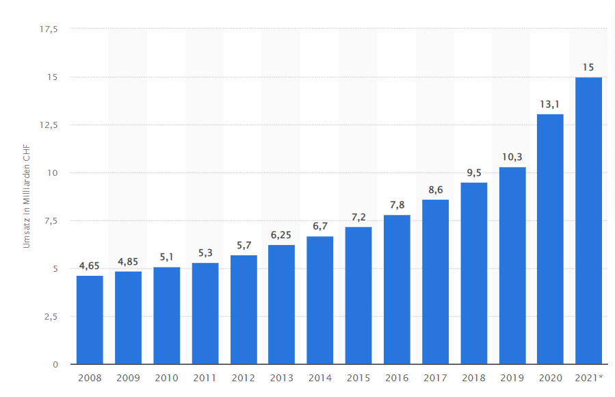
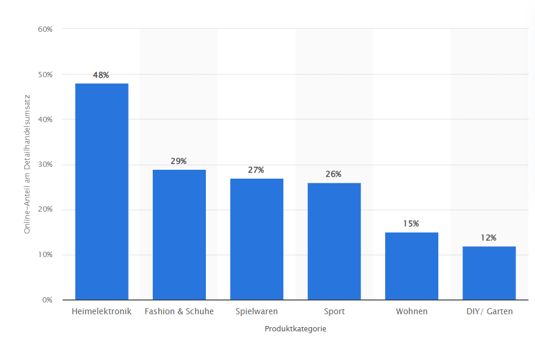
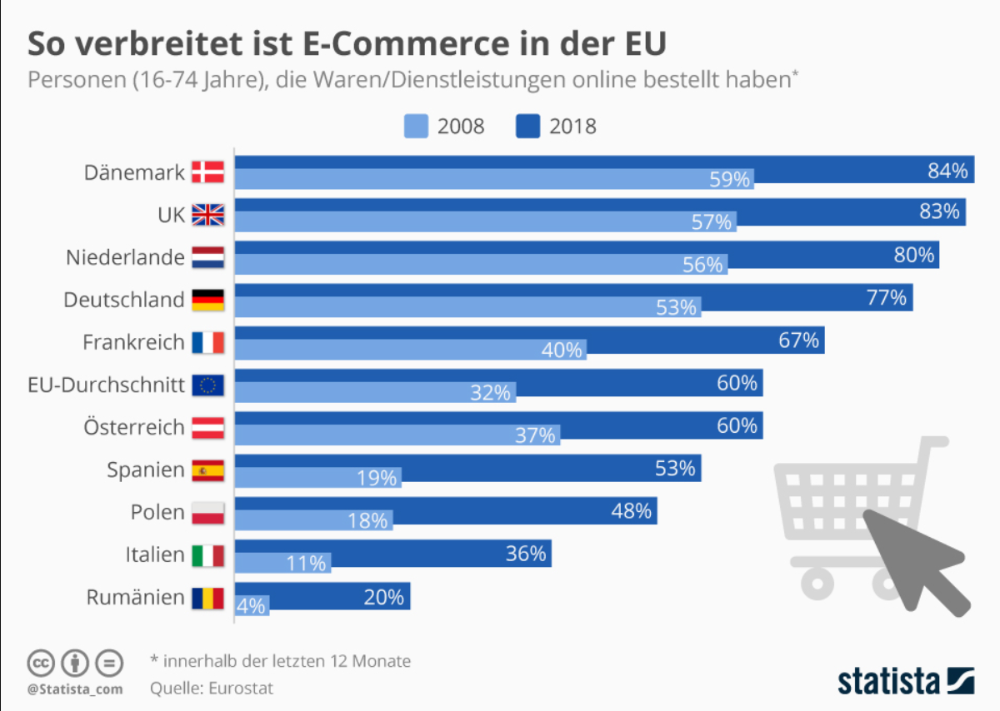

Einleitung
Auf dieser Seite vergleichen wir den Onlinehandel mit dem Stationären Handel, wobei wir Vor- und Nachteile erläutern, Statistiken beschreiben und die Geschichte des Onlinehandels erzählen. Das Ganze ist ein Schulprojekt in den Fächern Wirtschaft und Informatik, bei dem wir das gemeinsame Arbeiten an einem Projekt lernen und gleichzeitig eine Webseite ins Internet stellen über ein Thema, was man nicht direkt beim ersten Suchen finden sollte. Wir haben uns für dieses Thema entschieden, weil wir selber gerne Produkte im Internet kaufen und wir fragten uns, welche Vor- und Nachteile es aus der Sicht des Kunden gibt.
Stationärer Handel
Der Stationäre Handel bezeichnet den Handel an einem bestimmten Ort, der vom Kunden besucht wird. Dabei wählt, zahlt und nimmt der Kunde seine Ware direkt im Geschäft mit. Beispiele für den stationären Handel sind übliche Einkaufsläden. Ob Kleiderladen, Schuhgeschäft oder Lebensmittelladen, alle sind im stationären Handel vertreten. Der Stationäre Handel ist schon seit Jahrtausenden in der Form, dass es ein Tauschgeschäft zwischen Ware und Geld stattfindet, bekannt.
Vorteile des stationären Handels
Der bedeutendste Vorteil des stationären Handels ist, dass man direkten Kontakt mit der Ware hat. Damit ist gemeint, dass man die Waren mit eigenen Augen direkt anschauen kann, sowie anfassen und testen. Im Kleidermarkt ist das Anfassen und Anprobieren von Waren ein wichtiger Bestandteil. Das anprobieren jenes Kleidungsstücks kann einem versichern, dass die Grösse stimmt und es bequem ist. Man kann sich besser für ein Kleidungsstück entscheiden, wenn man es physisch vor sich hat.
Ein Zweiter bedeutender Vorteil ist, dass man die Gekaufte Ware direkt mitnehmen kann. Dabei ist der zusätzliche Vorteil der Verfügbarkeit. Die Ware die einem in einem Geschäft gezeigt wird, ist auch vorhanden. Dabei besteht die Sicherheit, dass man die Ware sicher bekommt und sie nicht beschädigt ist. Demnach kann man, wenn man etwas im Schaufenster sieht, die Ware oftmals direkt kaufen und mitnehmen oder sogar direkt anziehen. Dabei spielt die Beratung ebenfalls eine grosse Rolle. Man geniest im stationären Handel die persönliche Beratung und teilweise auch speziell Beratung in spezifischen Marktnischen.
Im Lebensmittelmarkt ist die Regionalität ein wichtiger Standpunkt für den stationären Handel. Insbesondere kleinere Geschäft bieten oftmals ausschliesslich regionale Produkte an. Obwohl Grossverteiler nur selten Produkte aus der Region verkaufen, kann der Käufer sich auch entscheiden in Geschäften einzukaufen, in denen regionale Produkte angeboten werden.
Der Stationäre Handel kann eine Einkaufsatmosphäre bilden, die anderswo nicht vorhanden ist. Eine Einkaufatmosphäre kann der Jahreszeit angepasst sein. Zum Beispiel kann eine weihnachtliche und winterliche Einkaufatmosphäre einem heimelig fühlen lassen. Sie gibt einem das Gefühl von Zugehörigkeit, dass man sich in einer passenden Umgebung befindet. Ebenfalls gibt ein Einkauferlebnis die Möglichkeit das Geschäft zu durchstöbern und dabei eventuell einen Lucky Punch zu landen.
Nachteile des stationären Handels
Der bekannteste Nachteil des stationären Handels ist das Schlangenstehen. Beim Einkaufen oder sich beraten lassen sind die vielen Leute im Geschäft ein Verhängnis. Man muss anstehen um zu zahlen und ist in einem Gedränge wenn man sich umschauen will. Dies nimmt dementsprechend auch viel Zeit in Anspruch, die einfach verloren geht.
Ein anderer grosser Nachteil ist, dass es immer wieder fehlende Waren gibt. Auch wenn etwas ausgestellt ist, das im Geschäft verfügbar ist, kann es gut sein, dass die passende Grösse fehlt, oder man den Pullover in der gewünschten Farbe nicht haben kann. Dies ist nicht nur ein Nachteil des stationären Handels, es ist sicherlich auch nervig, wenn man in ein Geschäft geht, nur um herauszufinden, dass es das Gewünschte nicht gibt.
Daraus ergibt sich auch schon der nächste Nachteil. Den Aufwand, den man betreiben muss um ein Geschäft zu besuchen und dann die ganze Ware noch nach Hause zu schleppen. Obwohl man sich dabei die Versandkosten sparen kann, ist es umständlich und nervenaufreibend. Dabei ist natürlich die dabei verschwendete Zeit ebenfalls ein Problem, weil man diese Zeit nur selten gut nutzen kann.
Ein weiterer Nachteil, der sehr viel Einfluss hat, sind die Öffnungszeiten. Da kennt man, dass man erst am Sonntagmorgen merkt, dass man doch Nichts mehr zu Essen hat, aber einfach in den Einkaufsladen zu gehen, kann dann schwierig sein. In ganz Mitteleuropa sind die Geschäfte Sonntags zu. Nur an einem Bahnhof sind sie teilweise noch offen, in denen man nun sein Abendessen kaufen kann. Ebenfalls können die Öffnungszeiten am Abend einen ganz schön einschränken. Nach der Arbeit nicht mehr einkaufen können, weil alles bereits geschlossen ist, kann ziemlich doof sein.
Weil der stationäre Handel, ja eben genau stationär ist, muss man zu Geschäft hin. Der Weg dahin kann umständlich und lange sein, was man sich nur für Spezielles antun will. Wenn man dann im Geschäft ankommt und der Verkäufer einen noch schnulzig anspricht ist man erst recht genervt. Es gibt leider viel zu viele unfreundliche Verkäufer, die einem die Stimmung so richtig verderben können.
Onlinehandel
Als Onlinehandel bezeichnet man den Kauf und Verkauf von Produkten oder Dienstleistungen online. Hierbei bestellt der Kunde die Ware Online und sie wird Ihm per Post zugeliefert. Beispiele für Onlinehandel wären Kleidergeschäfte oder Essensgeschäfte. Aber auch Waren wie Laptops etc. werden zurzeit schon online verkauft. In vergangenen Jahren traten immer mehr Geschäfte dem Oninehandel bei. Auch in Zukunft wird der Onlinehandel wachsen und ein grosser Bestandteil des Marktes ausmachen. Doch was die Vor- und Nachteile des Onlinehandels sind werden wir Ihnen unten auflisten.
Vorteile des Onlinehandels
Ein grosser Vorteil des Onlinehandels ist, dass man als Kunde nicht in der Nähe des Geschäftes sein muss. Man kann gemütlich von Zuhause aus, in einem Online-Shop seine Sachen auswählen und binnen einer Woche stehen sie vor der Haustür. Dann kann man zum Beispiel gemütlich von Zuhause aus Kleider anprobieren und entscheiden, ob sie einem gefallen. Wenn sie nicht passen, kann man sie wieder zurückschicken, ohne jemals in einem Geschäft zu stehen. Der Onlinehandel ist für jeden von Zuhause aus erreichbar, vorausgesetzt man hat Internetzugang.
Ein weiterer Vorteil des Onlinehandels ist, dass der Kunde die Möglichkeit hat zu jedem Zeitpunkt bestellen zu können, was auch immer der Kunde will. Sei es Kleider oder Essen. Ein Online-Shop hat im Vergleich zu einem stationären Geschäft immer geöffnet. Wenn man zum Beispiel um vier Uhr in der Nacht etwas bestellen möchte, kann man dies tun und die Ware wird meistens schon am nächsten Morgen versendet, soweit die Ware auf Lager ist.
Beim Onlineshopping kann auch Geld gespart werden. Der Kunde muss zum einen keine Reisekosten bezahlen, da er ja von zu Hause bestellen kann. Zum anderen wird aus der Sicht vom Unternehmen Kosten gespart, da man kein Personal benötigt für den Onlineshop, anders wie in einem stationären Geschäft.
Nachteile des Onlinehandels
Ein Nachteil des Onlinehandels aus der Sicht eines Kunden ist die Sicherheit und Privatsphäre vom Benutzer. Wenn man einen Kauf betätigt, muss man persönliche Informationen an den Shop weiterleiten, was den Nachteil hat, dass man nicht weiss, was genau mit den Daten passiert und wer sie alle sieht. Insbesondere bei Zahlungsangaben kann es zu einem grossen Problem werden, wenn eine falsche Person die Informationen hat. Auch ist nachgewiesen, dass die Betrugsfälle existieren und steigen.
Aus der Sicht eines Kunden kann es auch ein Nachteil sein, dass man die Kleider, die man online bestellt vor der Bestellung nicht anprobieren kann und somit nicht weiss ob die Kleider einem gefallen oder ob sie einem passen. Falls sie dies eben nicht tun, muss das Produkt mit Aufwand zur Post gebracht werden, um es wieder zurückzuschicken. Dazu könnte es noch zu Versandkosten kommen, welche man bei einem normalen Geschäft nicht hätte.
Ein weiterer Nachteil des Online-Shopping wäre der fehlende soziale Kontakt. Wenn man in einem Kleiderladen sich nicht sicher ist, ob man jetzt diesen Pullover kaufen sollte oder ob einem der Pullover nicht zu gross wäre, kann man sich Hilfe holen, mit der man über die Bedenken sprechen kann. Im online Verkauf gibt es keine Angestellte, die einem eine solche Frage beantworten können, man muss selbst einschätzen, ob einem der Pullover passen könnte.
Statistiken
Auf dieser Statistik wird der Umsatz im Online- und Versandhandel in der Schweiz dargestellt. Der Umsatz stieg von 2008 bis 2011 nur leicht, ab dann fing es an jedes Jahr mehr Umsatz als im Vorjahr zu geben. Ab 2019 bis heute gabe es deutlichen Anstieg, jeweils zwei bis drei Milliarden mehr als im Vorjahr. Also in den letzten zwei Jahren hat sich der Umsatz um 32% gesteigert.
In dieser Statistik ist der Online-Anteil am Umsatz des Deitailhandels in der Schweiz zu sehen. Der Detailhandel ist in Produktkategorien unterteilt. Der höchste Online-Anteil ist bei der Heimelektronik, was wahrscheinlich daran liegt, dass dort die Präferenzen nicht individuell sind, wie bei Fashion, Schuhe oder Spielwaren. Bei Fashion gehen viele Leute lieber in die Läden, um das Produkt in echt zu sehen oder dessen Qualität zu prüfen. Bei der Heimelektronik kann man weniger entscheiden, es wird zum Beispiel ein PC mit gewissen Leistungen benötigt, dafür gibt es oft keine grosse Auswahl. Oder es ist etwas kaputt und ein Ersatzteil wird benötigt, somit gibt es wieder keine Auswahl.
Hier sieht man gut, dass der Onlinehandel zwischen 2008 und 2018 in Europa, vor allem im Norden, viel beliebter wurde. Nicht nur im Norden, sondern auch der EU-Durchschnitt ist stark gestiegen, er hat sich in diesen zehn Jahren verdoppelt. Darauf kann man schliessen, dass der Onlinehandel auch in den nächsten zehn Jahren viel Zulauf bekommen wird.
Fazit
Die Vor- und Nachteile sind ziemlich ausgeglichen. Oftmals ist ein grosser Vorteil des stationären Handels ein Nachteil des Onlinehandels. Der wohl grösste Vorteil des Onlinehandels ist, dass man nicht an Öffnungszeiten gebunden ist und des Geschäft besuchen muss. Stattdessen kann man gemütlich von Zuhause shoppen. Dies ist dementsprechend auch ein grosser Nachteil des stationären Handels. Genauso ist ein Nachteil des Onlinehandels, das physische ansehen und anfassen des Produktes, ein Vorteil des stationären Handels.
Unser Fazit ist, dass das eine nicht wirklich besser wie das andere ist. In gewissen Nischen gibt es für uns klare Präferenzen. Im Elektronik Markt würden wir so gut wie immer online bestellen. Esswaren oder auch Kleider hingegen, kaufen wir oftmals in einem regionalen Geschäft ein. Diese Entscheidung fallen wir, da für uns bezüglich diesen Produkte die jeweiligen Vorteile gegenüber den Nachteilen überwiegen. Genauso kaufen wir teurere Produkte, die man eher selten kauft wie zum Beispiel Skier, meistens in einem stationären Geschäft.
Geschichte
Vorgeschichte
Bei der Vorgeschichte handelt es sich um die Jahren 1960 bis Mitte 1990. Dazu gehören im Wesentlichen drei Entwicklungen:
-
Die Verbesserung der Leistung in der Technik der Telekommunikation und des Computers. Diese beiden Bereiche wachsten zusammen zu einem verbreiteten System von vernetzten Computern. Für diese Entwicklung waren folgende Ereignisse wichtig:
In der USA beginnt im Jahr 1969 das Arpanet, wobei Computer über längere Distanzen vernetzt werden. Das Arpanet ist der Vorläufer des Internets. 1981 kam der erste IBM-PC auf den Markt mit 64 Kilobyte Hauptspeicher.
Die ersten Mikrocomputer wurden dann 1975 entwickelt. -
Im Geschäftsbereich breitete sich die Anwendung von vernetzten Computern aus, was zur Gründung etlicher neuen Unternehmen folgte:
1979 wurde der kommerzielle Onlinedienst Compuserve gegründet, der Betrieb Multimedia-Pilotversuch wurde um 1994 gegründet und weitere Unternehmen in diesem Bereich wurden gegründet. -
Die Online-Kommunikationssysteme, für Privatkunden und Massenpublikum, entwickelte sich weiter. Zu dieser Entwicklung gab es auch wichtige Fortschritte:
1983 wurde das Kommunikationsprotokoll TCP/IP im Arpanet eingeführt, womit auch das Internet begann. In CERN in Genf wurde das erste Konzept für das World Wide Web (WWW) im Jahr 1989 und vier Jahre danach wurde dazu der erste grafische Browser Mosaic entwickelt.
Geschichte ab 1995
Der Beginn des Onlinehandels führt auf das Jahr 1995 zurück, denn dann wurde das Internet für die Wirtschaft eröffnet und die ersten grossen Suchmaschinen, wie Altavista, Lycos und Yahoo sind entstanden. Die Suchmaschine, welche heute die Meisten kennen: Google, wurde erst 1998 gegründet.
Kurz vor 1995, nämlich im August 1994, fand der erste offizielle Verkauf über einen Onlineshop statt, welcher eine Privatperson aus der USA getätigt hat. Dies war ein wichtiges Ereignis, welches man auch als Anfang des Onlinehandels bezeichnen könnte. Was aber eher der Anfang war:
Viele Onlinehandel Unternehmen, die auch heute noch zu den meist verbreiteten gehören, wurden schon zwischen 1993 und 1999 gegründet, welche jedoch vorerst die Internetkommunikation für Bestellungen nutzten. Beispiele dafür wären Amazon, was am Anfang ein Internetbuchhändler war, und das Internetauktionshaus Ebay. Diese Unternehmen konnten nur gegründet werden dank den Entwicklungen der Anwendungen für die Datenverarbeitung, der Telekommunikation und der Vernetzung.
Bis ins Jahr 2000 wurden standardisierte Systeme für den Onlinekauf entwickelt, wodurch die Unternehmen wuchsen und viele neue gegründet wurden. Dies passierte, weil die neuen Systeme für den Onlinekauf alles vereinfachten und Unternehmen ihren Erfolg darin sahen.
Der ganze Onlinehandel erhielt auch ein gewaltiger Aufschub wegen dem einfachen Zugang zum Internet und dessen Handel. Mit dem einfachen Zugang ist gemeint, dass Unternehmen ohne allzu grossem Aufwand Produkte und Informationen anbieten konnten und diese Angebote konnten von allen Menschen mit Zugang zum Internet genutzt werden.
Als dann das erste IPhone im Jahr 2007 auf den Markt kam, hatte der Onlinehandel wieder mehr Zulauf, womit in diesen Jahren auch die Benutzerfreundlichkeit etwas zu tun hat, welche vor dem ersten IPhone sehr stark verbessert wurde. Benutzerfreundlich heisst, dass eine Webseite oder eine Software einfach und mit einer gewissen Selbstverständlichkeit zu bedienen ist.